14 routes across the Everest region
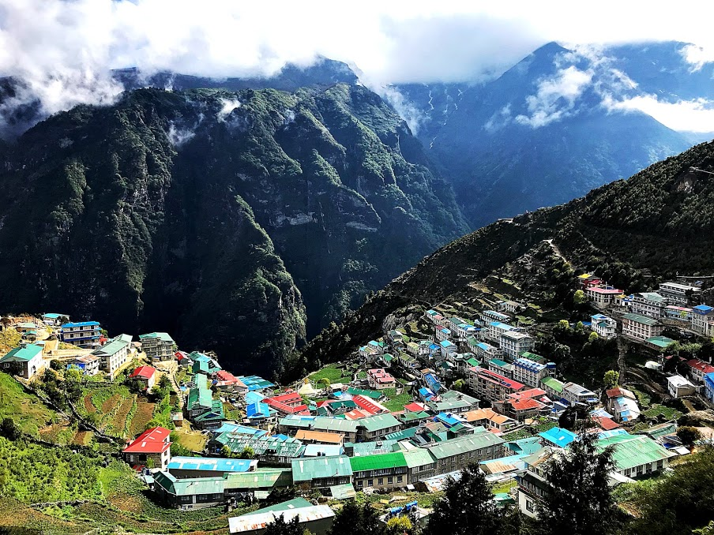
The gateway to Everest — explore the bustling Sherpa capital, visit the Everest Museum, hike to Khumjung, and acclimatize in comfort.
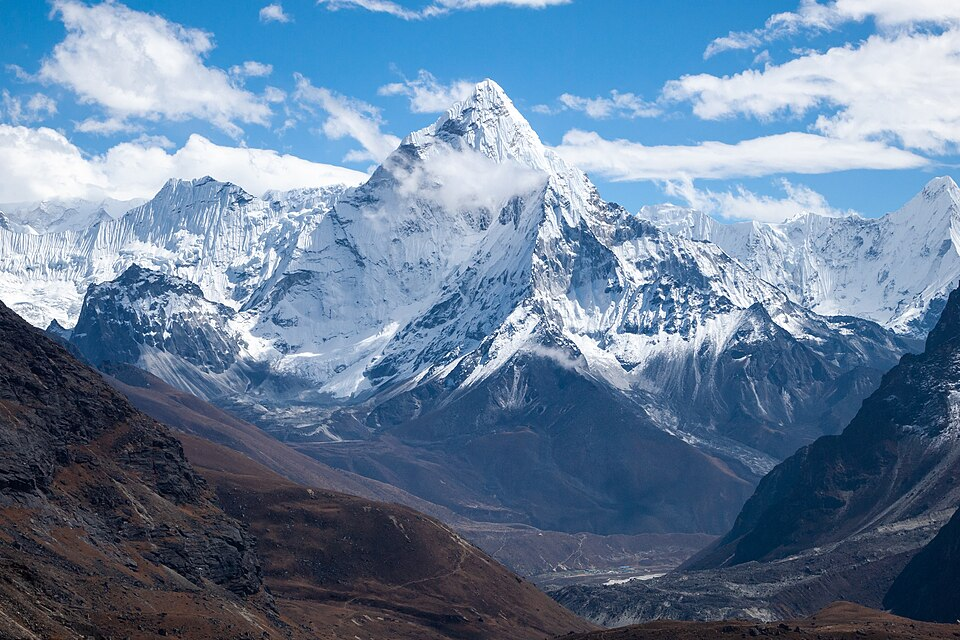
Trek to the foot of one of the world's most photogenic mountains — the "matterhorn of the Himalayas." A classic route through Sherpa villages.
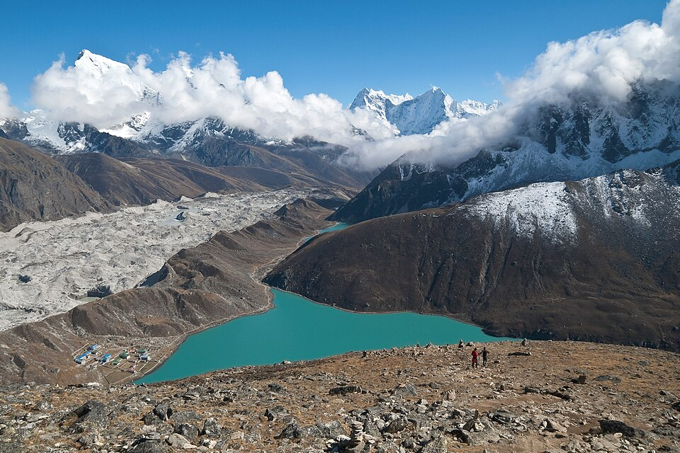
A serene alternative to the EBC trail — turquoise sacred lakes at altitude, a glacier hike, and the iconic summit of Gokyo Ri with panoramic Everest views.
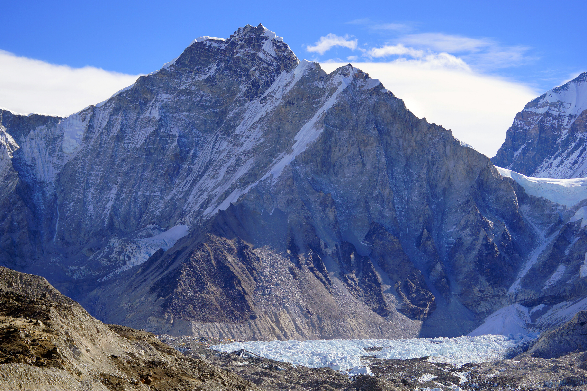
The world's most legendary trek. Stand at the foot of the world's highest mountain, feel the thin air at 5,364m, and look up at the Khumbu Icefall.
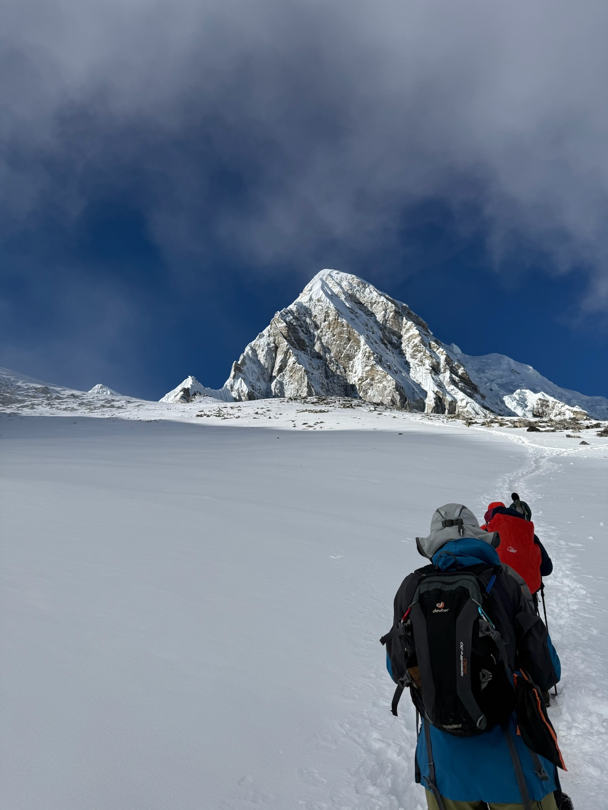
Hike before dawn to summit Kalapathar (Black Rock) at 5,545m for the world's most dramatic sunrise view directly over Everest. Bucket-list moment.
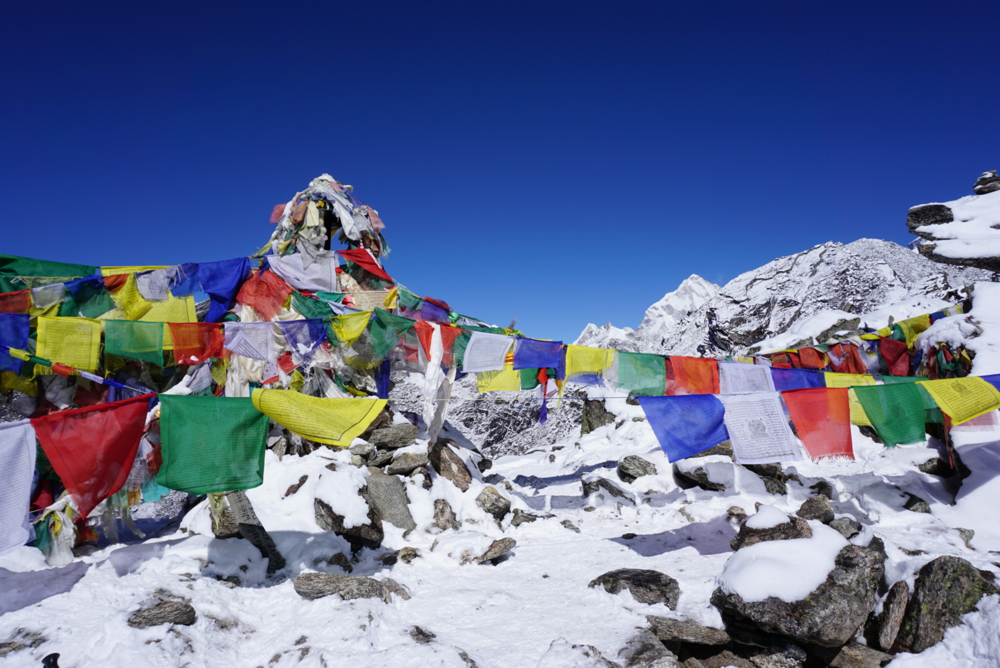
Cross the dramatic Renjo La pass at 5,360m with sweeping views of the Everest massif, then descend to the sacred Gokyo Lakes.
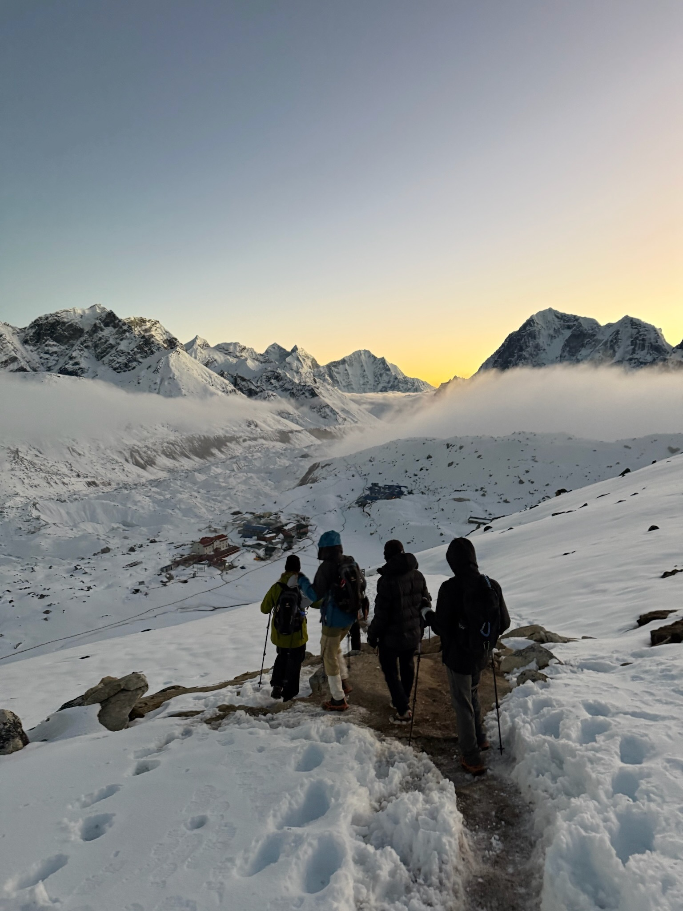
Walk the same path Hillary & Tenzing walked. Start from Jiri as the original expeditions did — a 3-week journey through remote Nepal before the crowds begin.
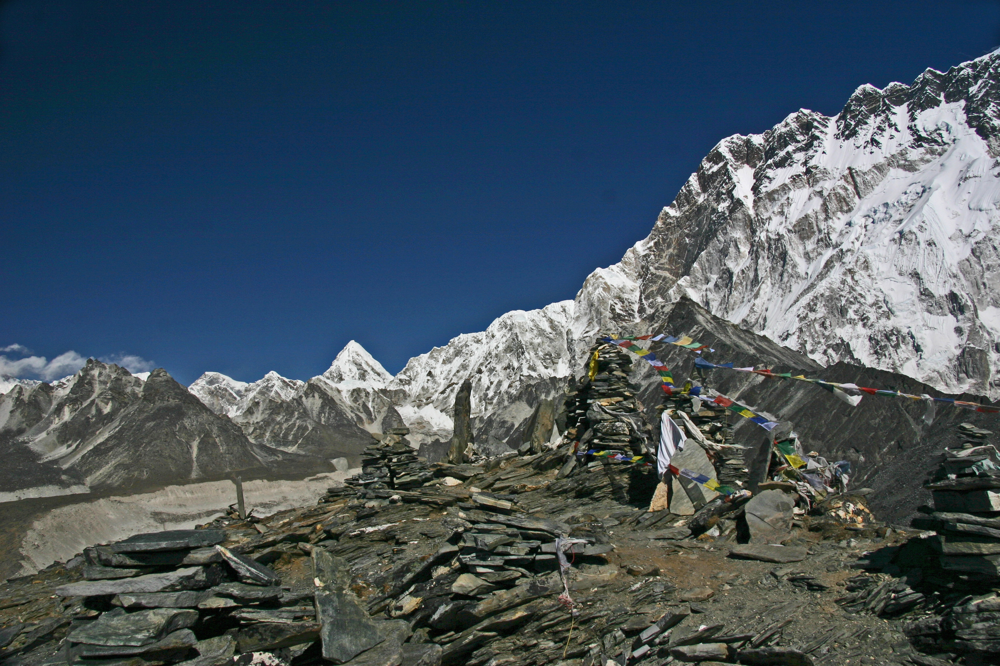
Summit Chhukung Ri for one of the highest non-technical viewpoints in the Khumbu — Ama Dablam, Lhotse, Makalu and Island Peak all in one panorama.
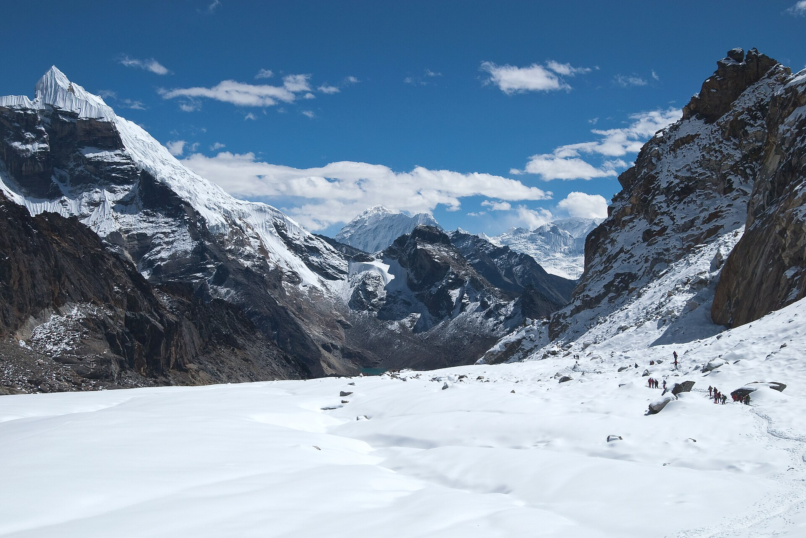
The ultimate Khumbu circuit. Cross Kongma La (5,535m), Cho La (5,420m), and Renjo La (5,360m) — includes EBC and Gokyo in one 20-day epic.
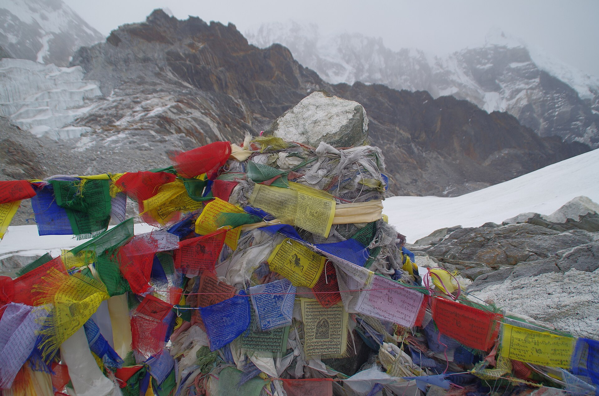
Cross the Cho La glaciated pass at 5,420m connecting the EBC route to the Gokyo valley — crampons required, spectacular high-mountain terrain.
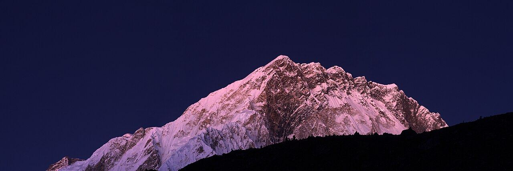
Also known as "La Bouche" — Lobuche East (6,119m) is a classic trekking peak near EBC. Fixed ropes, basic technical climbing, and a summit above the 6,000m mark.
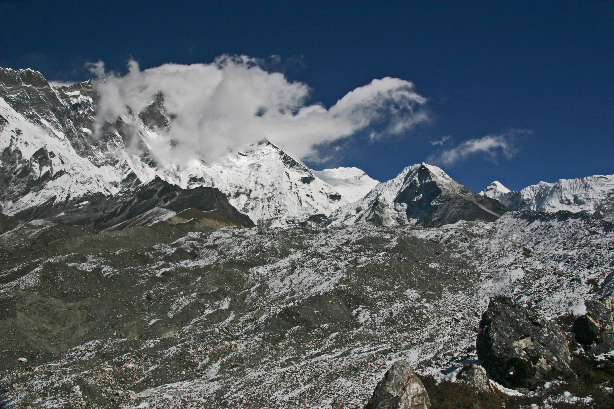
Nepal's most popular trekking peak — so-named because it appears as an "island" above the Chhukung glacier. Technical summit with ropes, crampons, and ice axe.
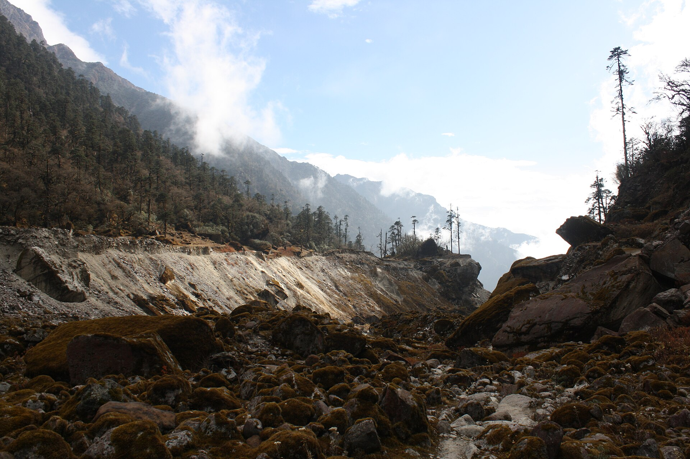
The highest trekking peak in Nepal. From the summit you can see five of the world's six highest mountains — Everest, Kangchenjunga, Cho Oyu, Lhotse, and Makalu.
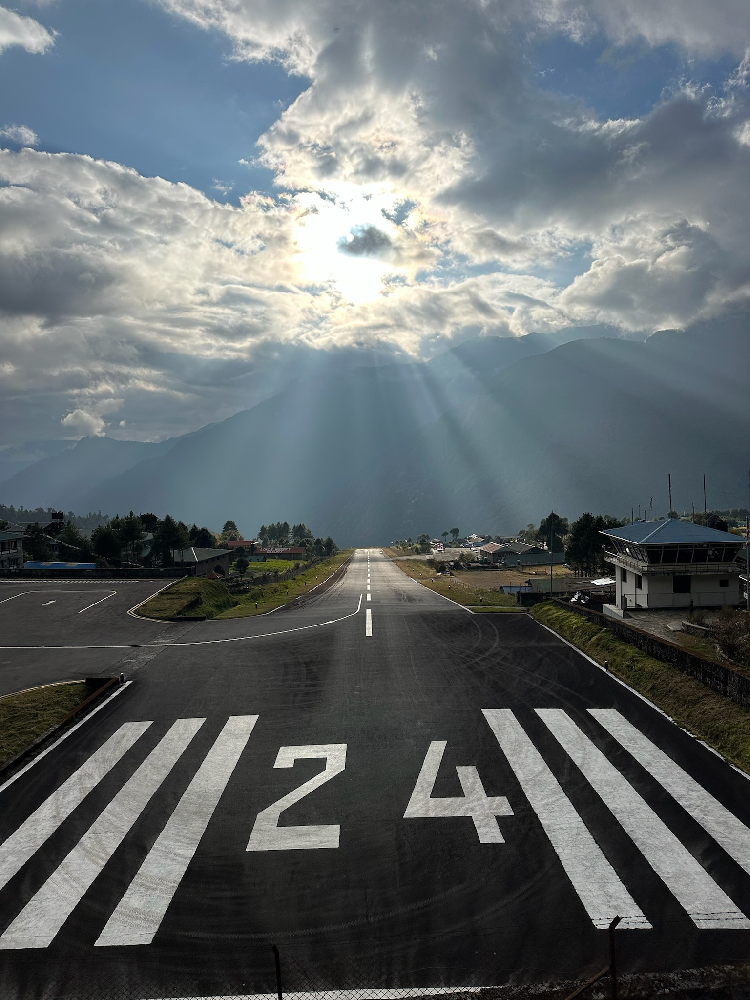
Design your dream Himalayan adventure from scratch. Private guide, custom itinerary, your pace, your objectives — anywhere in the Khumbu.